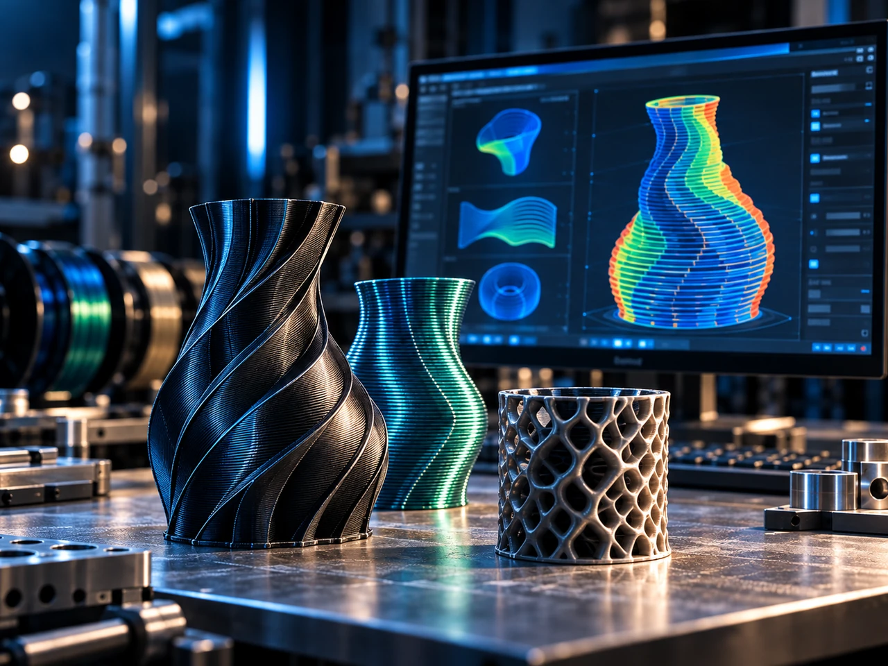

Geometry processing
Representing and analysing geometry for non-planar or multi-orientation manufacturing.
Researching the software architecture required to translate complex geometry into machine-aware additive manufacturing strategies.
MYCNC3D studies slicer architectures for manufacturing processes that cannot be fully described by conventional horizontal layers and standard three-axis motion.

Project overview
Multi-axis and non-planar processes introduce information that conventional planar slicers largely avoid: local deposition orientation, machine reachability, tool clearance, kinematic limits and coupled process constraints.
MYCNC3D researches software architectures capable of representing these constraints while remaining compatible with practical additive-manufacturing workflows.
Why it matters
When deposition direction can vary, geometry decomposition, path orientation, machine constraints and process sequencing become coupled problems.
A robust architecture must separate reusable geometry and process logic from machine-specific execution while still allowing both to exchange the information they need.
Current focus
Representing and analysing geometry for non-planar or multi-orientation manufacturing.
Comparing planar, multiplanar, non-planar and hybrid decomposition approaches.
Introducing machine limits, reachability and tool-clearance information into path generation.
Data structures that carry geometry, process intent and machine information through the pipeline.
Separating high-level manufacturing strategy from machine-specific motion generation.
Evaluating how advanced functions can coexist with established additive-manufacturing software ecosystems.
Engineering approach
MYCNC3D currently evaluates several software and geometry-processing approaches rather than committing prematurely to a single slicer architecture. Experimental trajectory work provides concrete manufacturing cases for deciding which functions should become reusable slicer components.
Current status
Functional requirements and candidate software architectures are being investigated through experiments, existing software ecosystems and direct toolpath-generation work.
The project will move to EXPERIMENTAL when an end-to-end prototype can automatically transform input geometry into a machine-executable advanced manufacturing strategy.
Next milestone
The next milestone is a prototype workflow that accepts a 3D model, applies at least one non-conventional slicing strategy, generates a machine-aware trajectory and exports an executable manufacturing representation.
The resulting path must then be physically validated on a representative machine.
Integrated platform
Long term, the slicer must connect geometry with toolpath intelligence, machine motion and extrusion constraints. It is therefore a central software layer of the integrated MYCNC3D platform.
Collaboration
MYCNC3D is interested in technical exchanges with software developers, geometry-processing specialists, research laboratories and additive-manufacturing platform providers.